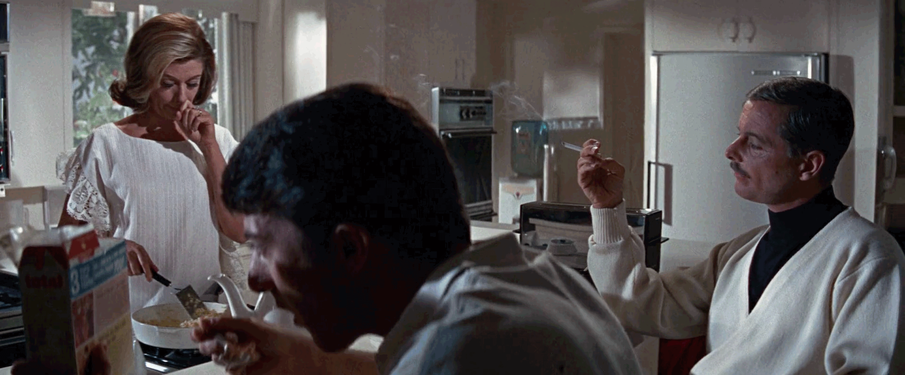
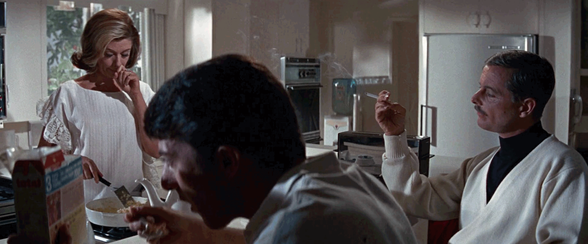

The Graduate is about a recent college graduate, Benjamin Braddock, who comes home to a graduation party thrown by his parents. All night, he’s actively trying to avoid the question: “What do you want to do with your life?” He then leaves the party to drive a family friend home, Mrs. Robinson, who then seduces him. They begin to have an affair but then things begin to get complicated as Benjamin falls for the one girl Mrs. Robinson tells him to stay away from, her own daughter Elaine. Made in 1967, this film is at the peak of mid century design. The film is set in the suburbs of Los Angeles, so most of the mid-century design of the movie is seen in the furniture of the homes.
Most of the design seen throughout the film is very up to date with the trends at the time, even the car that Benjamin is driving, which is a 1966 Alfa Romeo Spider 1600 also known as the Duetto. The Robinsons have a beautiful home equipped with a full bar and stylish decor. The bar as well as most of the house has a strict black and white color scheme. Many parts of the living room come across as very graphic and geometric including the bar accessories, “BAR” globe lamp, white leatherette swivel bar stools, with a similar shape to the Eames Molded Fiberglass Barstool, and the backyard awning which is seen through the glass sliding door to the backyard. The rest of the room is filled with plants as well as the jungle looming outside the glass back door. Little details include more exotic patterns including the cocktail shakers, blanket, and even the dress that Mrs. Robinson is wearing.
"Mrs. Robinson, you're trying to seduce me. Aren't you?"
Final Scene


 
